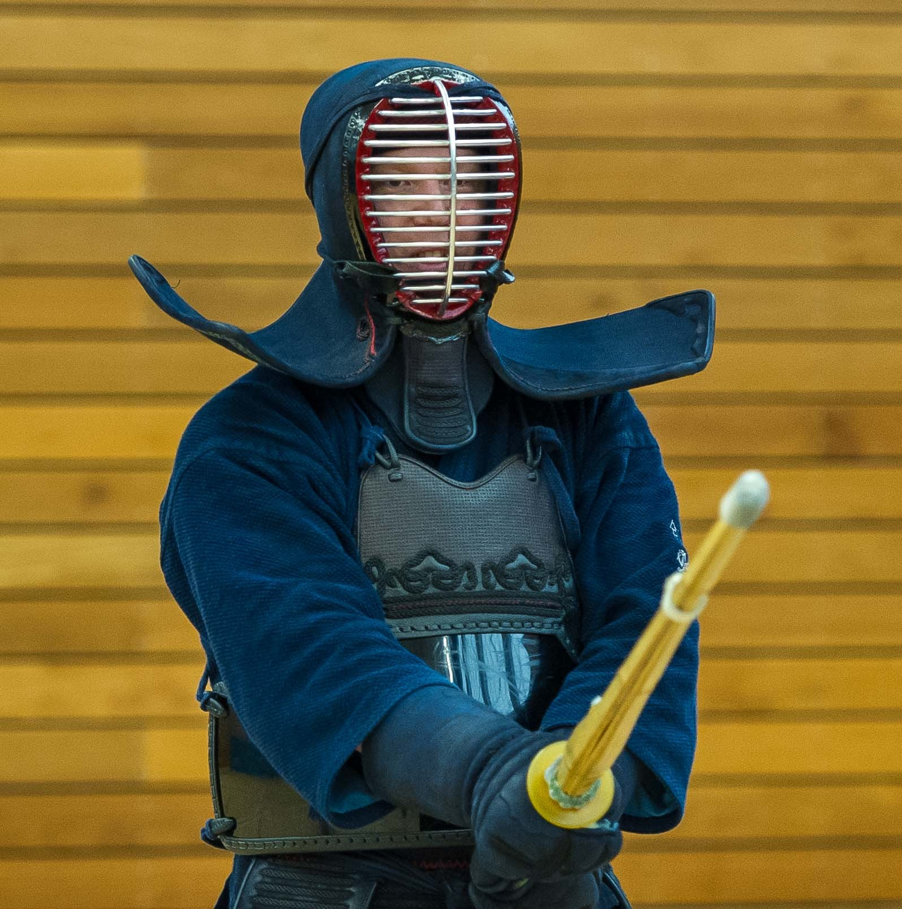
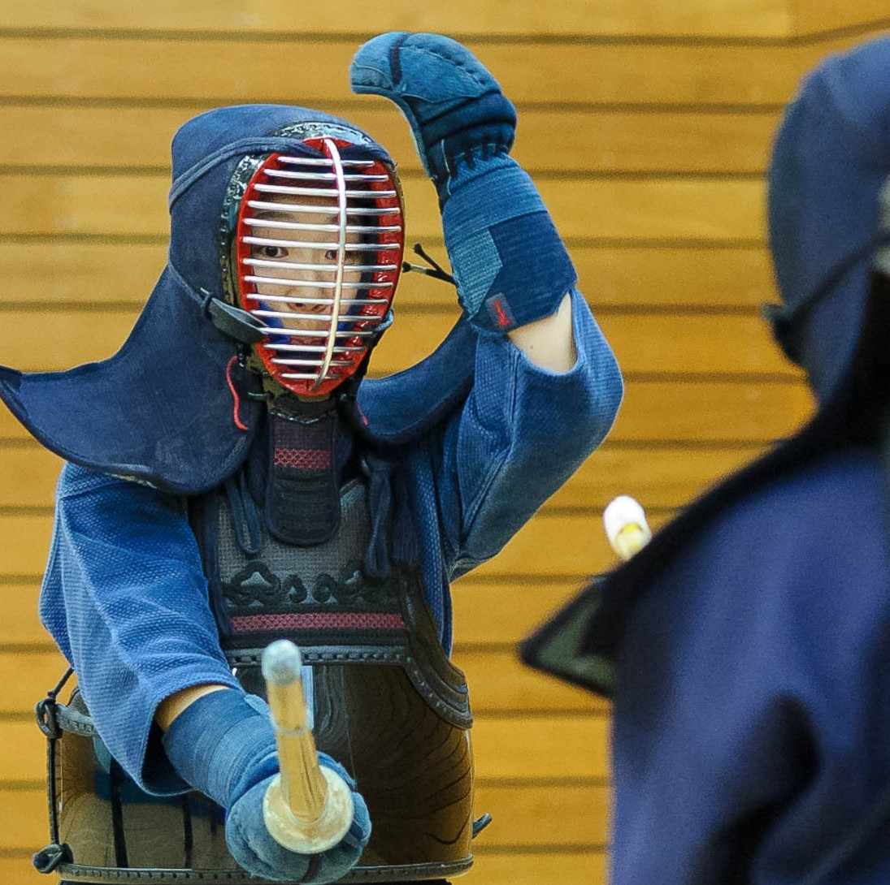

Our instructors bring years of dedicated practice and a passion for sharing the way of the sword.

Head Instructor
Has been practicing Kendo since 2010. He first started at Tetsuu Ryu Kendo Club in Port Talbot.

Instructor
Started Kendo in Japan, practicing through high school as well as university and has continued her Kendo in the UK.